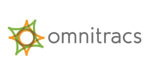
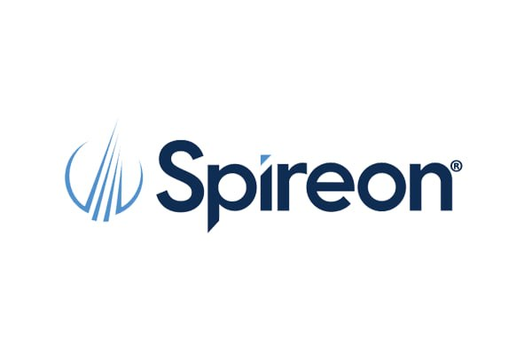
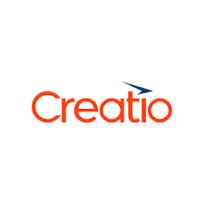
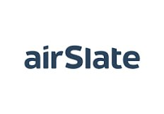
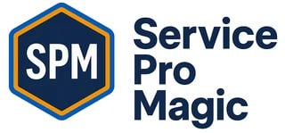

John Midtbo
Revenue, Partnerships & AI-Enabled GTM Leader
Timeline
Strengths
AI Projects
Proof
Want to see what I built with AI? Take the tour
Senior Manager, Sales & Marketing
Scalability Experts
2011 – 2014

Senior Manager, Global Channel Marketing
Omnitracs
2014 – 2017

Senior Manager, Channel Marketing
Spireon
2017 – 2019
Director of Channels and SMB
Omnitracs
2019 – 2021

Regional Channel Director, Americas
Creatio
2021 – 2023

Vice President, Global Channels & Alliances
airSlate
2023 – 2025

Founder / AI Venture Studio
ServiceProMagic · SnapCall · ROICalcMagic
2025 – Present
 John MidtboRevenue, Partnerships & AI-Enabled GTM Leader
John MidtboRevenue, Partnerships & AI-Enabled GTM Leader